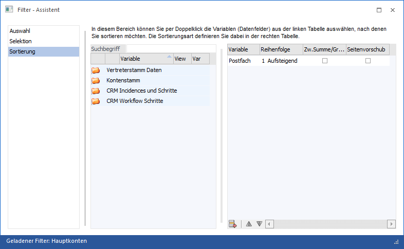
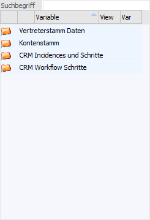
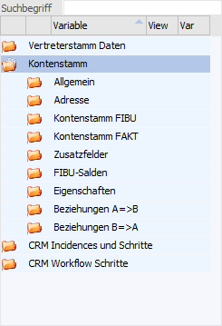
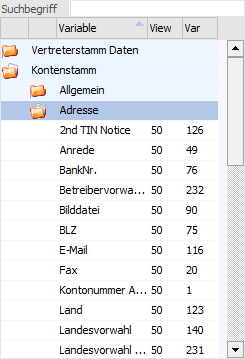
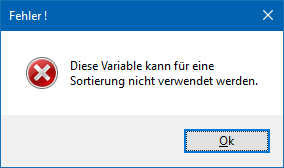
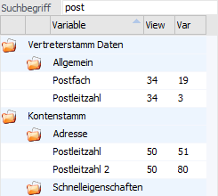
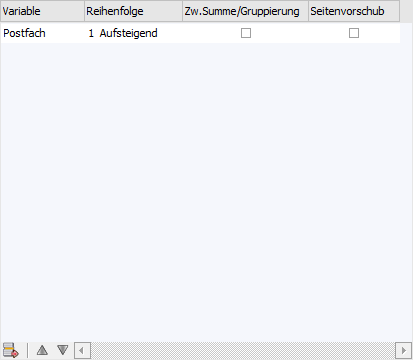
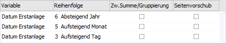
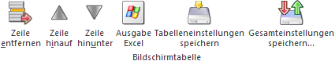

In dem dritten Bereich des Assistenten kann die Sortierungen der Ausgabe definiert werden.
Achtung
Ob dieser Bereich zur Verfügung steht, ist vom Ausgangsfenster abhängig.

Im linken Bereich des Fensters werden die zur Verfügung gestellten Variablen angezeigt, im rechten Teil jene Variablen, nach welchen sortiert werden soll.
Variablen
In der linken Tabelle werden alle Datentabellen, Datenbereiche und Variablen angezeigt, die bei der Auswahl verwendet werden können.
Die Übernahme / Zuweisung der Variablen kann per Doppelklick bzw. mit Drag & Drop (in die rechte Tabelle) erfolgen.
Innerhalb der linken Tabelle werden die Datentabellen mit ihren Bereichen und Variablen hierarchisch dargestellt, wobei zuerst immer die Datentabellen (1. Ebene) und die Datenbereiche (2. Ebene) der verfügbaren Variablen angezeigt werden.
ü 1. Ebene - Datentabellen
In der
ersten Ebene werden die Datentabellen dargestellt, welche in dem Filter
verwendet werden können.

ü 2. Ebene - Datenbereiche
Durch
einen Doppelklick auf das Symbol  in der ersten Spalte wird die darunter
liegende Ebene der Datenbereiche angezeigt. Z.B. ist die Tabelle "Kontenstamm"
u.a. in die Bereiche "Allgemein", "Adresse", "Kontenstamm FIBU" und "Kontenstamm
FAKT" untergliedert.
in der ersten Spalte wird die darunter
liegende Ebene der Datenbereiche angezeigt. Z.B. ist die Tabelle "Kontenstamm"
u.a. in die Bereiche "Allgemein", "Adresse", "Kontenstamm FIBU" und "Kontenstamm
FAKT" untergliedert.

ü 3. Ebene - Variablen
In der
dritten Ebene werden dann die verfügbaren Variablen angezeigt, die in dem Filter
verwendet werden können.

Achtung
Unter Umständen können bestimmte
Variablen nicht für die Sortierung verwendet werden (z.B., weil eine andere
Sortierung technisch oder logisch nicht durchführbar ist). In diesem Fall wird
eine entsprechende Meldung ausgegeben.

Ø Suchbegriff
Neben der manuellen Auswahl kann mit Hilfe des Suchbegriffs schnell und einfach nach den gewünschten Variablen gesucht werden. Hierfür wird der Begriff eingegeben und bestätigt, wodurch nur mehr jene Tabellen / Bereiche / Variablen angezeigt werden, welche dem gesuchten Suchbegriff entsprechen.
Beispiel
Es wird nach "post" gesucht.

Variablen für Sortierung

In der rechten Tabelle werden alle Sortierungskriterien angezeigt, wobei auch mehrmals die gleiche Variable als Kriterium existieren kann (z.B. bei Datumsvariablen). Dabei können folgende Spalten bzw. Felder bearbeitet werden:
Ø Variable
An dieser Stelle wird die gewählte Variable angezeigt.
Ø Reihenfolge
Aus der Auswahllistbox kann gewählt werden, ob die Sortierung "1 - Aufsteigend" (kleinster Wert am Anfang) oder "0 - Absteigend" (größter Wert am Anfang) vorgenommen werden soll.
Hinweis
Bei Datumsvariablen werden zusätzlich noch die Reihenfolgen "2 - Absteigend Tag" bis "7 - Aufsteigend Jahr" (d.h. Unterteilung in Jahr, Monat und Tag) angeboten.
Beispiel

Ø Zwischensumme / Gruppierung
Durch Aktivierung dieser Option wird eine Zwischensumme und / oder Gruppierung gebildet. Was genau geschieht, hängt dabei von der Ausgabeform ab:
ü Ausgabe Bildschirm / Ausgabe
Drucker
Wird diese Checkbox aktiviert, dann wird nach jedem Wechsel des
Sortierkriteriums eine Zwischensumme der zuletzt angedruckten Werte angedruckt -
der Andruck wird vom Programm selbst vorgenommen.
Beispiel
Es wird eine Sortierung nach "Vertreter =>-1- Aufsteigend" vorgenommen. Zuerst werden alle Daten, die den Vertreter 1 betreffen, gedruckt. Bevor der Vertreter 2 gedruckt wird, wird eine Summe eingefügt, die alle Zahlenwerte der Auswertung (die in der Auswertung als Zahl definiert wurden z.B. Umsatz, Rohertrag) summiert.
ü Ausgabe Tabelle (WinLine
LIST)
Durch Anwahl der Checkbox erfolgt bei dieser Ausgabeform eine
automatische Gruppierung gemäß der vorangestellten Variablen. Optional können
diese Gruppen im Ausgabefenster, mit Hilfe des beigestellten Symbols (schwarzes
Dreieck), geschlossen werden. In diesem Fall bleibt die Gruppenbezeichnung mit
einem geklammerten Wert (Anzahl der vorhandenen Zeilen) stehen und gibt somit
weiterhin Aufschluss über Inhalte.
Hinweis
Im Zusammenhang mit der automatischen Gruppierung ist bei "Ausgabe Bildschirm" ausschließlich eine aufsteigende Sortierung darstellbar.
ü Ausgabe Kalender
Es wird in den
Kalender automatisch die gewählte Variable als Gruppierungsfeld eingefügt. Dabei
stellt diese Einstellung nur den Standard da, d.h. innerhalb des Kalenders kann
die Gruppierung jederzeit umgestellt werden.
Ø Seitenvorschub
Wird diese Checkbox aktiviert, so wird ein Seitenvorschub eingefügt, sobald alle Daten eines Sortierkriteriums gedruckt wurden. Diese Checkbox hat nur dann Sinn, wenn es sich bei dem Ausgangsfenster um eine Auswertung handelt.
Beispiel
Es wird eine Sortierung nach "Vertreter => 1 - Aufsteigend" vorgenommen. Zuerst werden alle Daten, die den Vertreter 1 betreffen, gedruckt. Bevor der Vertreter 2 gedruckt wird, wird ein Seitenumbruch eingefügt. Die Daten vom Vertreter 2 werden dementsprechend auf einer neuen Seite begonnen.
Tabellenbuttons

Ø Zeile entfernen
Durch Anklicken des Buttons "Zeile entfernen" wird die gerade aktive Zeile gelöscht.
Ø Zeile hinauf
Mit dem Button "Zeile hinauf" wird das markierte Sortierkriterium nach oben verschoben.
Ø Zeile hinunter
Mit dem Button "Zeile hinunter" wird das markierte Sortierkriterium nach unten verschoben.
Ø Ausgabe Excel
Durch Anwahl des Buttons "Ausgabe Excel" wird der Inhalt der Tabelle an Microsoft Excel übergeben.
Ø Tabelleneinstellungen speichern
Die Spalten einer Tabelle können grundsätzlich an beliebige Positionen verschoben, bzw. in der Breite entsprechend angepasst werden. Durch Anwahl des Buttons "Tabelleneinstellungen speichern" werden die Einstellungen benutzerspezifisch gespeichert und bei dem nächsten Aufruf des Programmpunktes wieder vorgeschlagen.
Ø Gesamteinstellungen speichern
Im Gegensatz zu "Tabelleneinstellungen speichern" können mit "Gesamteinstellungen speichern" mehrere Tabellenaufbauten gespeichert und nach Wunsch geladen werden. Zusätzlich werden Sonderfunktionen der Tabelle (z.B. "Spalte gruppieren") ebenfalls bei der Speicherung bedacht.